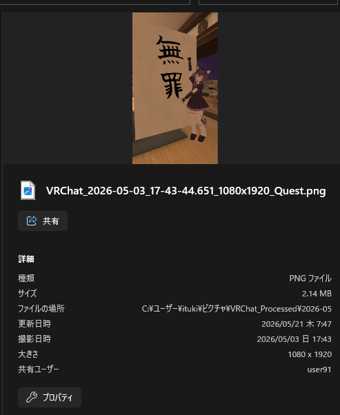
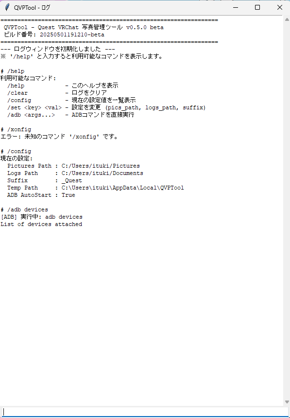
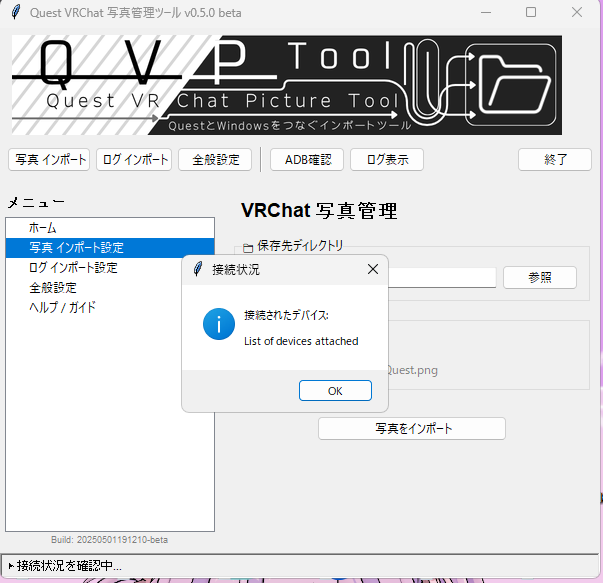
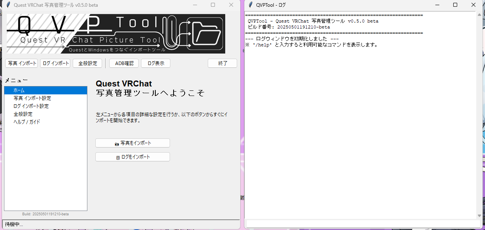
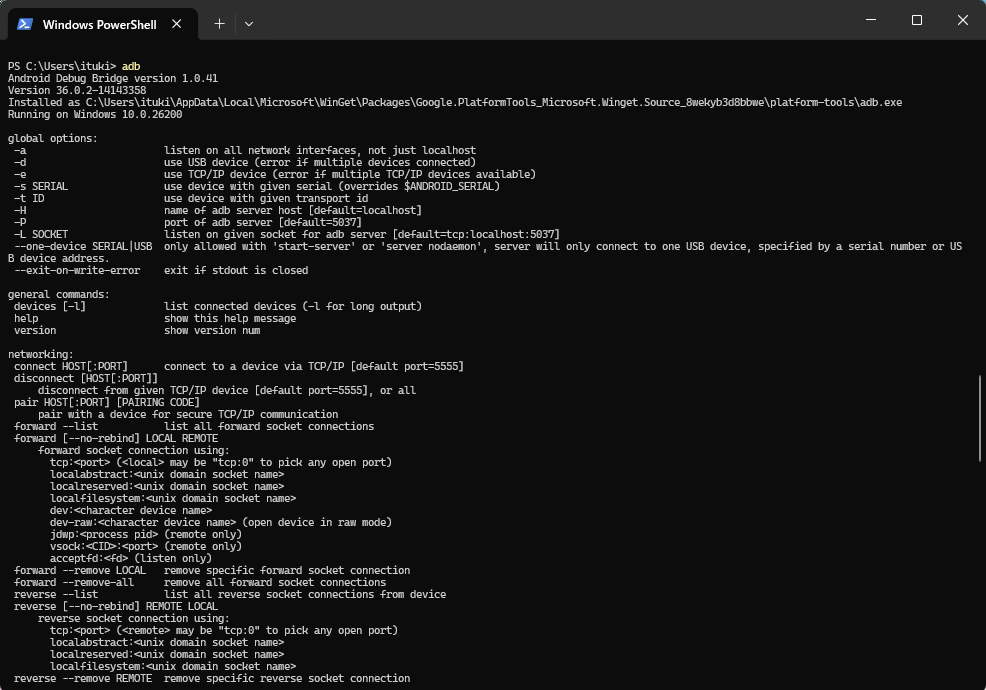

QVPT - Quest VRChat Picture Tool
Windows向けのQuest/VRChat写真・ログインポート・管理ツール
QVPT（Quest VRChat Picture Tool）は、Meta Quest2、3s、3等のQuestシリーズ と Windows を接続し、VRChat の写真およびログを PC に転送・保存・管理するための専用ツールです。Quest 単体では扱いにくいデータを Windows 上で取り出し、閲覧や分析を容易にします。
概要
本ソフトウェアは、Quest 内の VRChat 写真を PC に転送して保存する機能と、VRChat のログを取得して PC 上のログにマージする機能を提供します。ADB（Android Debug Bridge）を利用して Quest の USB デバッグ経由で通信を行います。
主な機能
VRChat写真のインポート

ファイル命名変更のサンプル
Quest 内の VRChat 写真を PC にコピーし、視認性の高いファイル名で保存します。オフラインでも画像を閲覧しやすくします。
ログの取得とマージ

アプリケーションログウィンドウの拡大
Quest 内の VRChat ログを取得し、PC 上の既存ログに追記（マージ）します。デバッグや解析作業に利用可能です。
ADB接続の確認

ADBによる接続診断結果
Quest と PC の接続状態を確認し、USB デバッグが有効になっているかをチェックします。接続トラブルの診断に役立ちます。
保存先の管理
 保存先フォルダーを指定し、ツールの設定を保存できます。次回起動時も同じ設定を利用できます。
保存先フォルダーを指定し、ツールの設定を保存できます。次回起動時も同じ設定を利用できます。
利用手順

メイン画面とログウィンドウの表示
- Quest を USB ケーブルで PC に接続し、Quest 内で USB デバッグを許可します。
- 保存先フォルダーを指定し、写真またはログのインポート対象を選択します。
- 「写真をインポート」または「ログをインポート＆マージ」を実行します。
Windows Defender の SmartScreen に警告が表示された場合は、「詳細情報」から実行してください。発行元未署名のため、警告が出る場合があります。
ADBのインストール

SDK Platform-Tools の導入
本ツールは ADB を利用します。ADB がインストールされていない場合は、公式ページから導入する必要があります。ADB が正しく導入されていないと、Quest が PC に認識されません。
ADB をインストール 詳細な使い方注意事項
- ADB は Android Debug Bridge です。Google 公式ページから導入してください。
- Quest 側の USB デバッグ確認画面で「この PC への接続を常に許可する」にチェックして許可してください。
- データ通信対応 USB ケーブルを使用し、未対応のケーブルでは充電不足に注意してください。